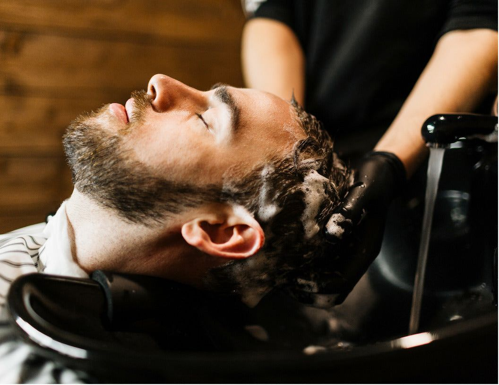
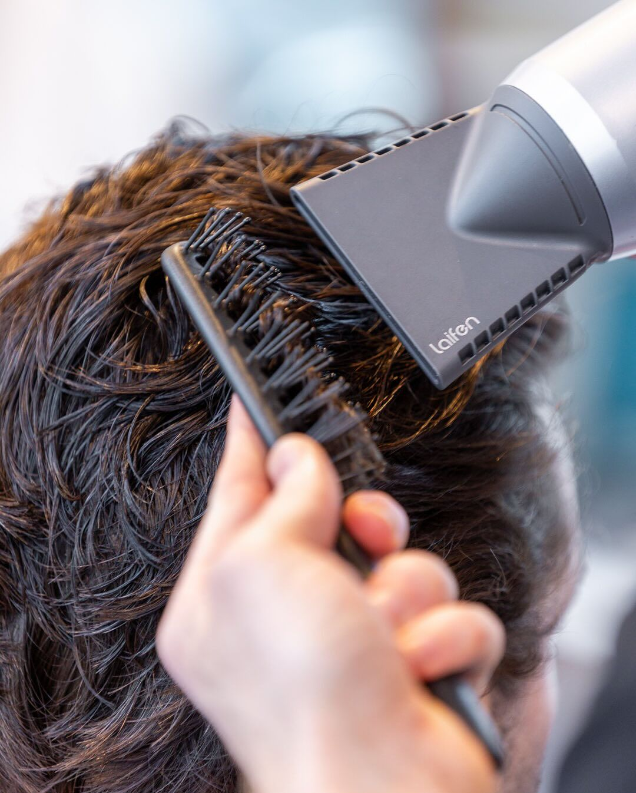

Mi az a korpa és miért jelenik meg?
A korpa valójában a fejbőr elhalt bőrsejtjeinek fokozott leválása. Ez egy természetes folyamat – a bőrsejtek folyamatosan megújulnak –, de ha felgyorsul, látható fehér pelyhek formájában jelenik meg a hajban és a vállakon. Sokan csak esztétikai problémaként kezelik, pedig a mögöttes ok mindig a fejbőr egyensúlyának valamilyen felborulása.
Fontos különbséget tenni a száraz és a zsíros fejbőrből eredő korpa között, mert a kezelésük részben eltér egymástól. A száraz fejbőr finom, apró pelyheket produkál, amelyek könnyen lehullanak. A zsíros fejbőrből eredő korpa nagyobb, zsírosabb és ragadósabb – és általában viszketéssel is együtt jár.

Mi okozza a korpásodást?
Száraz fejbőr
Ha a fejbőr túl száraz – akár az évszak, akár a túl forró víz vagy az erős sampon miatt –, bőrsejtek válnak le nagyobb mennyiségben. A korpa finom és apró, és általában viszketés kíséri.
Zsíros fejbőr
Túlzott faggyútermelés esetén a fejbőrön élő Malassezia nevű gomba elszaporodhat, ami gyorsabb bőrsejt-leválást okoz. Ez nagyobb, zsírosabb pelyheket és erősebb viszketést eredményez.
Nem megfelelő sampon
A túl erős tisztítószerek kiszárítják a fejbőrt, az enyhék viszont nem távolítják el megfelelően a faggyút és a szennyeződést. Az irritáló összetevők is hozzájárulhatnak a fejbőr felborult egyensúlyához.
Életmód és stressz
A tartós stressz, az alváshiány és a helytelen táplálkozás mind befolyásolják a bőr állapotát – köztük a fejbőrét is. Ezek nem önállóan okozzák a korpát, de súlyosbíthatják a meglévő problémát.

Hogyan szabadulj meg a korpától?
A korpa kezelése nem igényel drága termékeket vagy bonyolult rutint – de következetességet igen. Az alábbiakban azokat a lépéseket gyűjtöttük össze, amelyek ténylegesen hatásosak.
- Korpa elleni sampon – keress olyan sampont, amely cink-piritont, ketokonazolt vagy szalicilsavat tartalmaz; ezek az összetevők gátolják a Malassezia gombát és csökkentik a bőrsejt-leválást. Heti 2–3 alkalommal használva általában 2–4 héten belül látható javulást hoz
- Helyes hajmosási technika – ne moss hajat túl forró vízzel, ne dörzsöld erősen a fejbőrt, és öblíts alaposan; a maradék sampon is irritálhatja a fejbőrt
- Fejbőr hidratálása – ha száraz a fejbőr, könnyű hidratáló tonik vagy fejbőr-olaj segíthet visszaállítani az egyensúlyt; kerüld a nehéz, zsírosító termékeket
- Hajformázók csökkentése – a wax, pomádé és egyéb hajformázók felgyülemlése eltömítheti a hajszálak tövét és irritálhatja a fejbőrt; hetente alapos tisztítással ez megelőzhető
- Rendszeres hajmosás – a túl ritka hajmosás hagyja felhalmozódni a faggyút és a szennyeződést, ami kedvez a gomba elszaporodásának; a saját hajtípusodhoz igazított, rendszeres rutin a leghatékonyabb
Hogyan segít a barber a korpa ellen?
Egy tapasztalt barber nem csak hajat vág – hanem látja a fejbőr állapotát is. A hajvágás során közelről megfigyeli a fejbőrt, és ha szükséges, felhívja a figyelmet a problémára és javaslatot tesz a kezelésre.
A rendszeres barber látogatás emellett tisztán tartja a hajszálak tövét – a felhalmozott termékmaradványok eltávolítása és a fejbőr alapos tisztítása hozzájárul az egészségesebb fejbőr egyensúlyhoz. Különösen fade és rövid hajvágások esetén ez jól látható különbséget jelent.
- A borbély közelről látja a fejbőr állapotát – és szól, ha valami nem stimmel
- Szakmai tanácsot ad a megfelelő samponról és ápolási rutinról
- A hajvágás során eltávolítja a termékmaradványokat a fejbőrről
- Rendszeres látogatással fenntartható az egészséges fejbőr egyensúly
Egészséges fejbőr, szép haj – foglalj időpontot
Ha korpával küzdesz, vagy csak szeretnéd, hogy a hajad és a fejbőröd a legjobb állapotban legyen – foglalj időpontot a Bosphorus barber shopba. A borbély segít azonosítani a problémát és javaslatot ad a megoldásra.